Foro de laComunidadInformática
Conectados para generar impacto28 NOV 2026 · CERO + INFINITO · FCEyN, UBA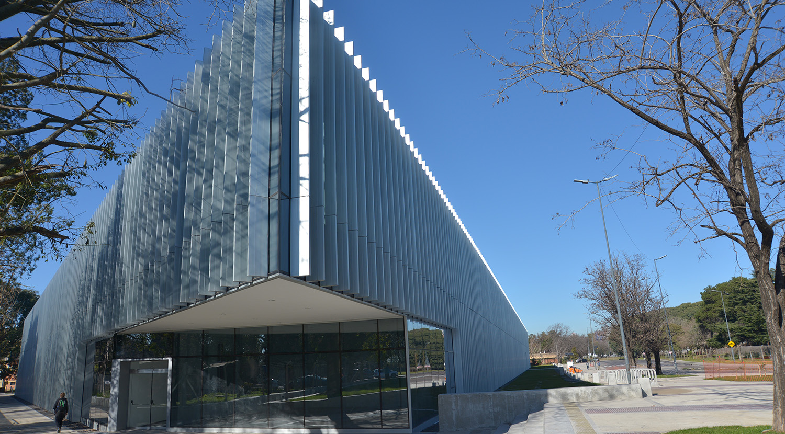
Cero +Infinito
FCEyN, UBA · Ciudad UniversitariaAv. Intendente Güiraldes 2160, CABA17:00 · PANEL DE CIERRE EN EL HALL CENTRALSÁB 28 NOV 2026Así transcurreel día
28 NOV 2026 · CERO + INFINITO · FCEyN, UBAAcreditacióny café
A las 10:00 empiezan las charlas y talleres de las comunidades.
28 NOV 2026 · CERO + INFINITO · FCEyN, UBACharlasy talleres
Las comunidades cuentan su trabajo, en paralelo. Elegí a qué actividad asistir.
28 NOV 2026 · CERO + INFINITO · FCEyN, UBAAlmuerzo
Volvemos a las 14:00 con los conversatorios.
28 NOV 2026 · CERO + INFINITO · FCEyN, UBAConversatorios
Referentes del sector debaten los seis ejes de la agenda.
28 NOV 2026 · CERO + INFINITO · FCEyN, UBACafé
A las 17:00, panel de cierre en el hall central.
28 NOV 2026 · CERO + INFINITO · FCEyN, UBAPanelde cierre
Una agenda común para el desarrollo tecnológico nacional.
28 NOV 2026 · CERO + INFINITO · FCEyN, UBACuidemoseste lugar
Hoy la Facultad nos abre sus puertas.
28 NOV 2026 · CERO + INFINITO · FCEyN, UBASacá fotos,subilas ymencionanos
En Instagram, en tus historias y publicaciones.
28 NOV 2026 · CERO + INFINITO · FCEyN, UBALo últimoen nuestrasredes
28 NOV 2026 · CERO + INFINITO · FCEyN, UBA28 NOV 2026 · CERO + INFINITO · FCEyN, UBA28 NOV 2026 · CERO + INFINITO · FCEyN, UBA
Desarrollo de videojuegos: ¿Qué perfiles busca hoy la industria del gaming?
 WIGAr28 NOV 2026 · CERO + INFINITO · FCEyN, UBA
WIGAr28 NOV 2026 · CERO + INFINITO · FCEyN, UBAInteligencia Artificial, Ciberseguridad, Tecnología Nuclear y Espacial como ejes de desarrollo y soberanía para una Argentina Potencia
28 NOV 2026 · CERO + INFINITO · FCEyN, UBAReconstruyendo la memoria colectiva mediante ciencia de datos
 Zona 428 NOV 2026 · CERO + INFINITO · FCEyN, UBA
Zona 428 NOV 2026 · CERO + INFINITO · FCEyN, UBA
La belleza de lo roto
28 NOV 2026 · CERO + INFINITO · FCEyN, UBA
Colonialismo digital: dependencia tecnológica y control democrático
 ODIA28 NOV 2026 · CERO + INFINITO · FCEyN, UBA
ODIA28 NOV 2026 · CERO + INFINITO · FCEyN, UBA
¿Quiénes construimos el futuro informático? Trabajo, tecnología y derechos desde los feminismos y las diversidades
28 NOV 2026 · CERO + INFINITO · FCEyN, UBAMolestando al poder de a una dataviz por vez
28 NOV 2026 · CERO + INFINITO · FCEyN, UBAHackeando la mente del atacante: tecnologías de engaño y respuesta en tiempo real
 GIC · UTN FRLP28 NOV 2026 · CERO + INFINITO · FCEyN, UBA
GIC · UTN FRLP28 NOV 2026 · CERO + INFINITO · FCEyN, UBAUn Palantir para gobernarlos a todos
28 NOV 2026 · CERO + INFINITO · FCEyN, UBALa guerra security vs. safety y los riesgos del campo de la información
28 NOV 2026 · CERO + INFINITO · FCEyN, UBA
Muy lindo el dashboard… ¿y ahora qué hago con esto? Del producto tecnológico a la solución de un problema
28 NOV 2026 · CERO + INFINITO · FCEyN, UBACiberseguridad en municipios
28 NOV 2026 · CERO + INFINITO · FCEyN, UBA
¿Qué es Cybercirujas? Combatiendo la obsolescencia programada desde la autogestión
28 NOV 2026 · CERO + INFINITO · FCEyN, UBA
Hackear, publicar, desobedecer
28 NOV 2026 · CERO + INFINITO · FCEyN, UBA28 NOV 2026 · CERO + INFINITO · FCEyN, UBASeis ejes de debate
28 NOV 2026 · CERO + INFINITO · FCEyN, UBA¿Qué políticas necesitamos para que la informática genere más desarrollo y mejor empleo?
28 NOV 2026 · CERO + INFINITO · FCEyN, UBA¿La inteligencia artificial viene a reemplazar trabajadores y aumentar la productividad?
28 NOV 2026 · CERO + INFINITO · FCEyN, UBA¿Qué capacidades tecnológicas necesita la Argentina para decidir su propio futuro?
28 NOV 2026 · CERO + INFINITO · FCEyN, UBA¿Cómo protegemos nuestras infraestructuras críticas con capacidades propias?
28 NOV 2026 · CERO + INFINITO · FCEyN, UBA¿Cómo trazamos carreras sostenibles en una industria que cambia todo el tiempo?
28 NOV 2026 · CERO + INFINITO · FCEyN, UBA¿Cómo cuidamos los derechos de las personas sin frenar el desarrollo tecnológico?
28 NOV 2026 · CERO + INFINITO · FCEyN, UBAIndustria IT y desarrollo productivo
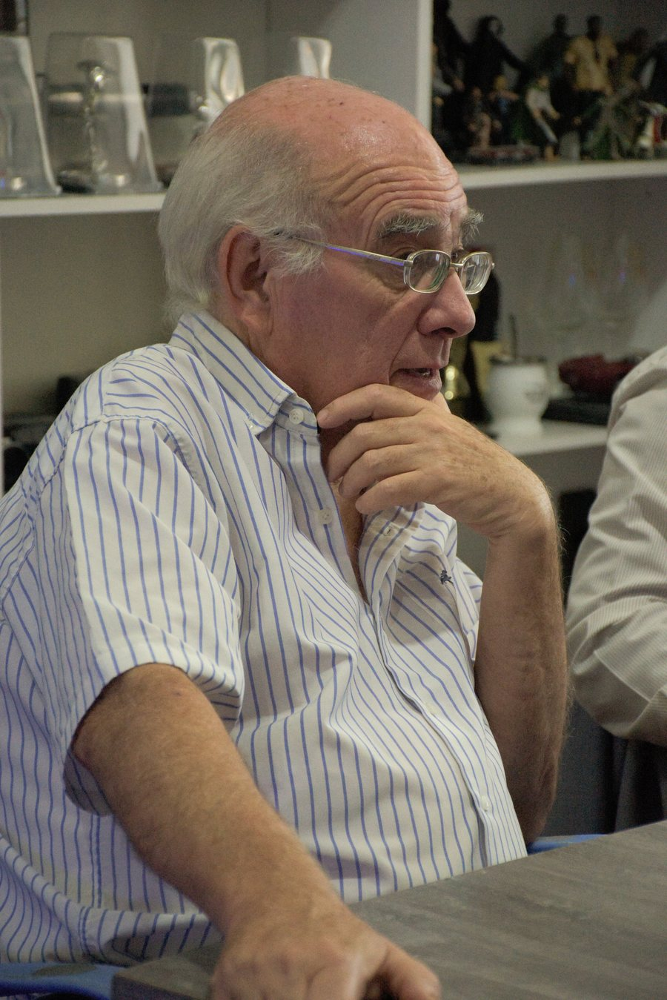


 28 NOV 2026 · CERO + INFINITO · FCEyN, UBA
28 NOV 2026 · CERO + INFINITO · FCEyN, UBATrabajo informático en tiempos de inteligencia artificial
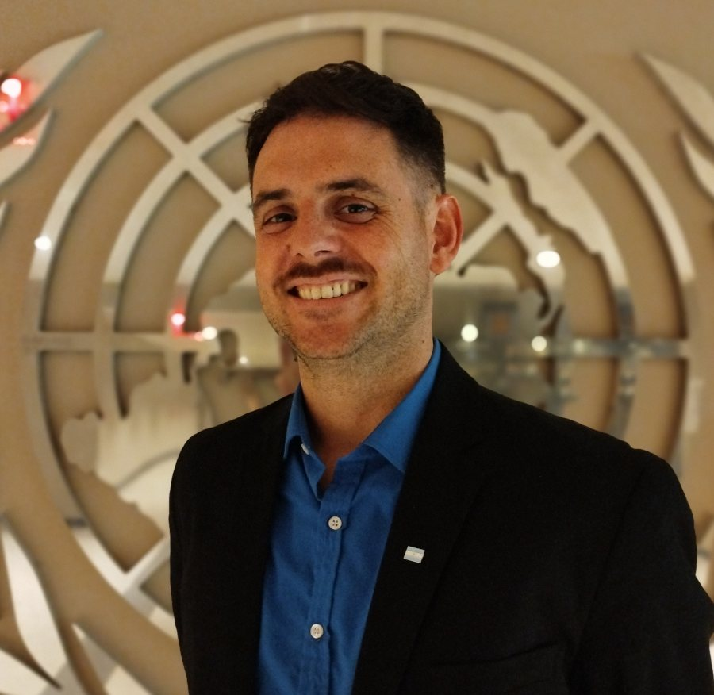

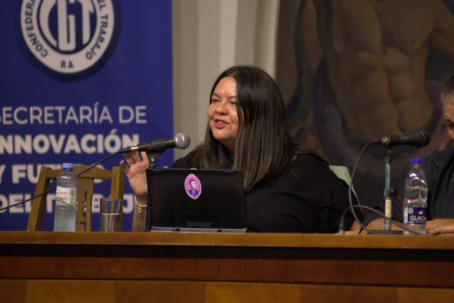
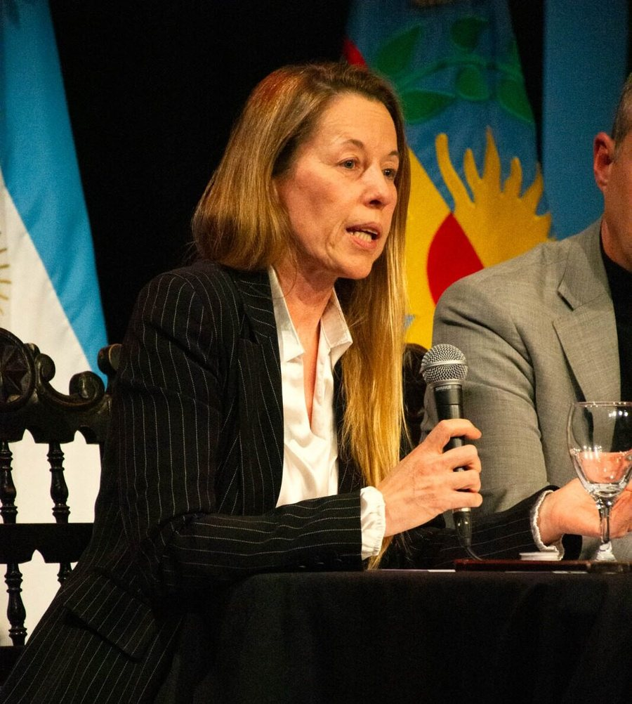
28 NOV 2026 · CERO + INFINITO · FCEyN, UBASoberanía tecnológica y desarrollo nacional
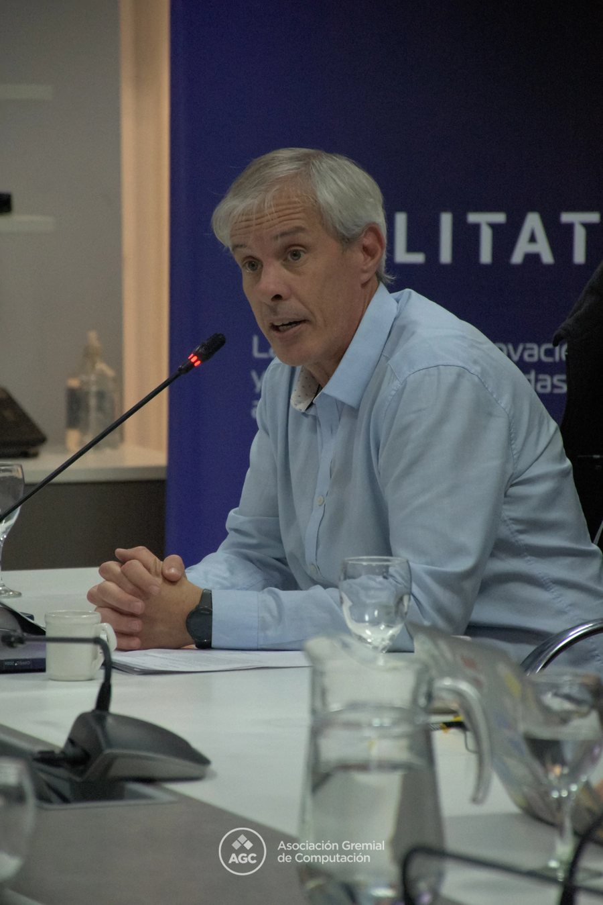


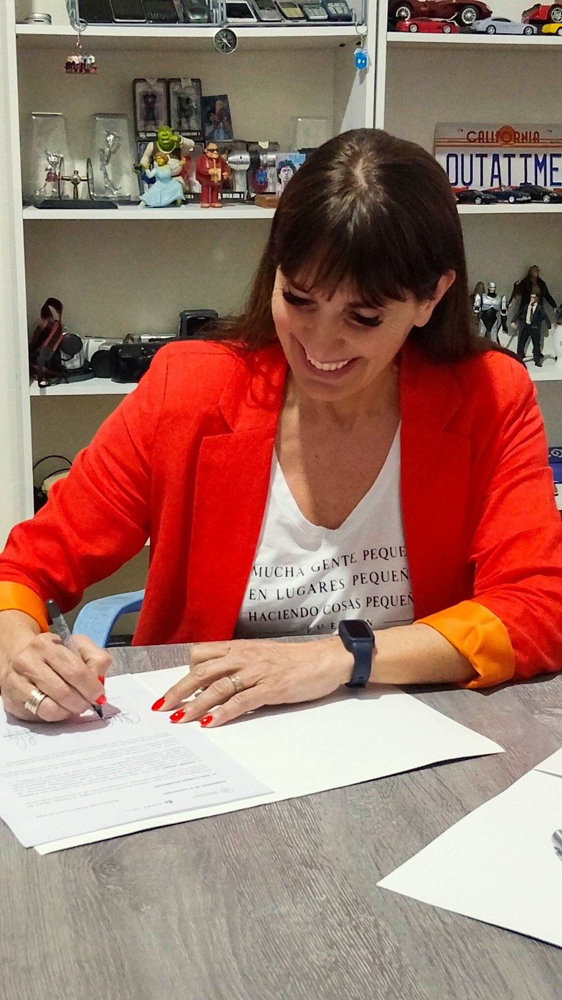
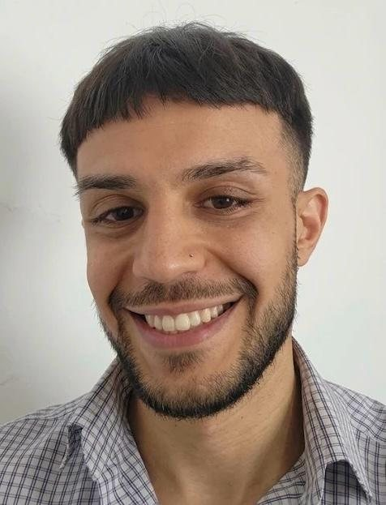
28 NOV 2026 · CERO + INFINITO · FCEyN, UBACiberseguridad y ciberdefensa: proteger nuestras capacidades estratégicas


 28 NOV 2026 · CERO + INFINITO · FCEyN, UBA
28 NOV 2026 · CERO + INFINITO · FCEyN, UBAEducación y formación para el desarrollo de nuevos perfiles profesionales

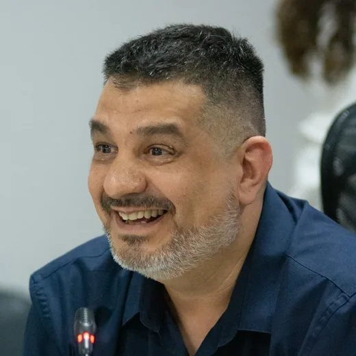


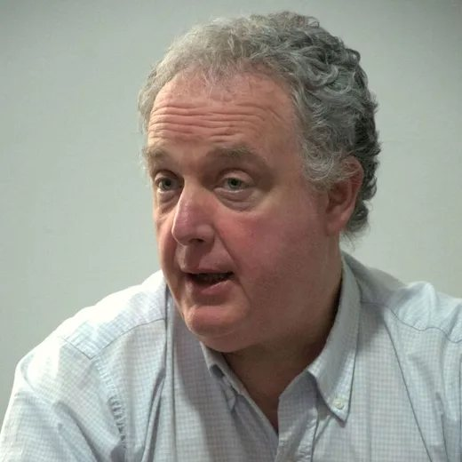
 28 NOV 2026 · CERO + INFINITO · FCEyN, UBA
28 NOV 2026 · CERO + INFINITO · FCEyN, UBADatos personales: derechos, privacidad y responsabilidad
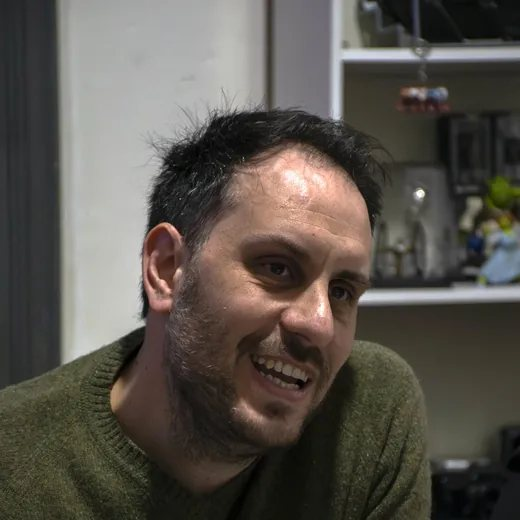


 28 NOV 2026 · CERO + INFINITO · FCEyN, UBA28 NOV 2026 · CERO + INFINITO · FCEyN, UBA28 NOV 2026 · CERO + INFINITO · FCEyN, UBA
28 NOV 2026 · CERO + INFINITO · FCEyN, UBA28 NOV 2026 · CERO + INFINITO · FCEyN, UBA28 NOV 2026 · CERO + INFINITO · FCEyN, UBAComunidades técnicas y de práctica


 28 NOV 2026 · CERO + INFINITO · FCEyN, UBA
28 NOV 2026 · CERO + INFINITO · FCEyN, UBADerechos digitales, género y sociedad


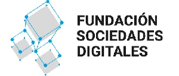
28 NOV 2026 · CERO + INFINITO · FCEyN, UBAInvestigación e innovación

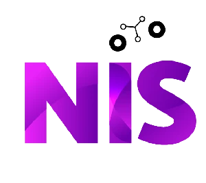

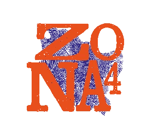

 28 NOV 2026 · CERO + INFINITO · FCEyN, UBA
28 NOV 2026 · CERO + INFINITO · FCEyN, UBATrabajo, cooperativas y profesión


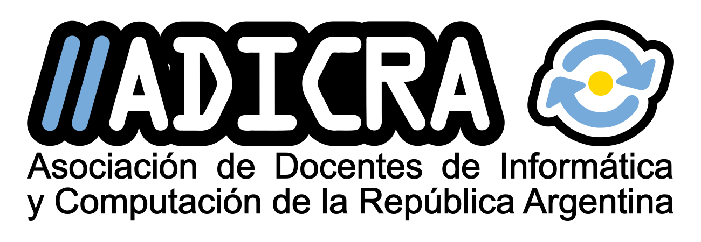
28 NOV 2026 · CERO + INFINITO · FCEyN, UBACentros de estudiantes y agrupaciones
 28 NOV 2026 · CERO + INFINITO · FCEyN, UBA
28 NOV 2026 · CERO + INFINITO · FCEyN, UBASomos comunidad




Yo estuveen el Foro
COMUNIDAD INFORMÁTICA · 2026@informaticos.arEl compromisode nuestrotrabajo
Trabajadores
Informáticos
28 NOV 2026 · CERO + INFINITO · FCEyN, UBAResumen2019–2023AGC Argentina
Trabajadores
Informáticos
28 NOV 2026 · CERO + INFINITO · FCEyN, UBAFestejo denuestros30 años
Trabajadores
Informáticos
28 NOV 2026 · CERO + INFINITO · FCEyN, UBAPlenarioFederalAGC
Trabajadores
Informáticos
28 NOV 2026 · CERO + INFINITO · FCEyN, UBASomostrabajadoresinformáticos
Trabajadores
Informáticos
28 NOV 2026 · CERO + INFINITO · FCEyN, UBASumate al Forode la ComunidadInformática
foco.informaticos.ar28 NOV 2026 · CERO + INFINITO · FCEyN, UBALos informáticos somosprotagonistas de unatransformación tecnológicasin precedentes.
28 NOV 2026 · CERO + INFINITO · FCEyN, UBAPero el futurono está escrito.
28 NOV 2026 · CERO + INFINITO · FCEyN, UBA28 NOV 2026 · CERO + INFINITO · FCEyN, UBAQue el desarrollo tecnológicoargentino esté al serviciodel trabajo, la justicia socialy el desarrollo nacional.
28 NOV 2026 · CERO + INFINITO · FCEyN, UBA
Una agendacomún
para el desarrollo tecnológico nacional.
28 NOV 2026 · CERO + INFINITO · FCEyN, UBA
En comunidadsomos másfuertes
En comunidadsomos másfuertes
Conectadospara generarimpacto
Conectadospara generarimpacto
Debemos comenzara pensar en
grandeDebemos comenzara pensar en
grandeUna agenda comúnpara el desarrollotecnológico nacional
Una agenda comúnpara el desarrollotecnológico nacional
Quiénes loconstruyen
Quiénes lo construyen
Unaagendacomún
Una agenda común
El futuro noestá escrito.
Lo escribimosen comunidad.
El futuro noestá escrito.
Lo escribimosen comunidad.
Seguimosconectados
foco.informaticos.arSeguimosconectados
foco.informaticos.arGracias
por construiresto juntos
Gracias
por construiresto juntos
Foro de laComunidad InformáticaConectados para generar impacto
Foro de laComunidad InformáticaConectados para generar impacto